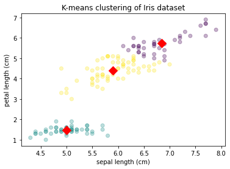
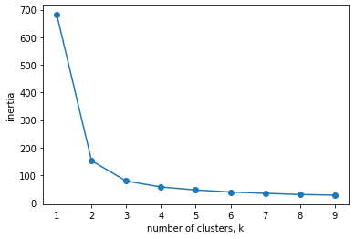

Clustering with k-means
from sklearn import datasets
iris = datasets.load_iris()
data = iris['data']
features = iris['feature_names']
target = iris['target']
target_names = iris['target_names']
# map target labels to species names => Ground Truth
species = target_names[target]
print(species)
# Import KMeans
from sklearn.cluster import KMeans
# Create a KMeans instance with 3 clusters: model
model = KMeans(n_clusters=3)
# Fit model to points
model.fit(data)
# Determine the cluster labels of iris data: labels => Prediction
labels = model.predict(data)
# can also use: labels = model.fit_predict(data)
# Calculate inertia: Measures how spread out the clusters are (lower is be!er)
print(model.inertia_)
78.85144142614601
# Import pyplot
import matplotlib.pyplot as plt
# Assign the columns of new_points: xs and ys
xs = data[:,0]
ys = data[:,2]
fig, ax = plt.subplots()
# Make a scatter plot of xs and ys, using labels to define the colors
ax.scatter(xs, ys, c=labels, alpha=0.3)
# Assign the cluster centers: centroids
centroids = model.cluster_centers_
# Assign the columns of centroids: centroids_x, centroids_y
centroids_x = centroids[:,0]
centroids_y = centroids[:,2]
# Make a scatter plot of centroids_x and centroids_y
ax.scatter(centroids_x, centroids_y, marker='D', s=100, color='r')
ax.set_title('K-means clustering of Iris dataset')
ax.set_xlabel(features[0])
ax.set_ylabel(features[2])
plt.show()

Compare ground truth to prediction
import pandas as pd
df = pd.DataFrame({'labels': labels, 'species': species})
ct = pd.crosstab(df['labels'], df['species'])
print(ct)
species setosa versicolor virginica
labels
0 0 48 14
1 50 0 0
2 0 2 36
What is the best clusters to choose?
The elbow rule, the point where the decrease slows down
See below, 3 is a good choice
ks = range(1, 10)
inertias = []
for k in ks:
# Create a KMeans instance with k clusters: model
model = KMeans(n_clusters=k)
# Fit model to samples
model.fit(data)
# Append the inertia to the list of inertias
inertias.append(model.inertia_)
# Plot ks vs inertias
plt.plot(ks, inertias, '-o')
plt.xlabel('number of clusters, k')
plt.ylabel('inertia')
plt.xticks(ks)
plt.show()

Pipelines with Kmeans and StandardScaller
Standard scaller
- in kmeans: feature variance = feature influence
StandardScallertransforms each feature to have mean 0 and variance 1
import pandas as pd
df = pd.read_csv('fish.csv', header=None) # prevent first row from becoming header
samples = df.iloc[:,1:].to_numpy()
species = df.iloc[:,0].to_numpy()
# Perform the necessary imports
from sklearn.pipeline import make_pipeline
from sklearn.preprocessing import StandardScaler
from sklearn.cluster import KMeans
# Create scaler: scaler
scaler = StandardScaler()
# Create KMeans instance: kmeans
kmeans = KMeans(n_clusters=4)
# Create pipeline: pipeline
pipeline = make_pipeline(scaler, kmeans)
# Fit the pipeline to samples
pipeline.fit(samples)
# Calculate the cluster labels: labels
labels = pipeline.predict(samples)
# Create a DataFrame with labels and species as columns: df
df = pd.DataFrame({'labels':labels, 'species':species})
# Create crosstab: ct
ct = pd.crosstab(df['labels'], df['species'])
# Display ct
print(ct)
species Bream Pike Roach Smelt
labels
0 33 0 1 0
1 1 0 19 1
2 0 17 0 0
3 0 0 0 13
Full pipeline with stocks
import pandas as pd
df = pd.read_csv('stock.csv')
df.head()
movements = df.iloc[:,1:].to_numpy()
companies = df.iloc[:,0].to_numpy()
# Perform the necessary imports
from sklearn.pipeline import make_pipeline
from sklearn.preprocessing import Normalizer
from sklearn.cluster import KMeans
# Create a normalizer: normalizer
normalizer = Normalizer()
# Create a KMeans model with 10 clusters: kmeans
kmeans = KMeans(n_clusters=10)
# Make a pipeline chaining normalizer and kmeans: pipeline
pipeline = make_pipeline(normalizer, kmeans)
# Fit pipeline to the daily price movements
pipeline.fit(movements)
Pipeline(memory=None,
steps=[('normalizer', Normalizer(copy=True, norm='l2')),
('kmeans',
KMeans(algorithm='auto', copy_x=True, init='k-means++',
max_iter=300, n_clusters=10, n_init=10, n_jobs=None,
precompute_distances='auto', random_state=None,
tol=0.0001, verbose=0))],
verbose=False)
# Import pandas
import pandas as pd
# Predict the cluster labels: labels
labels = pipeline.predict(movements)
# Create a DataFrame aligning labels and companies: df
df = pd.DataFrame({'labels': labels, 'companies': companies})
# Display df sorted by cluster label
print(df.sort_values('labels'))
labels companies
18 0 Goldman Sachs
55 0 Wells Fargo
3 0 American express
5 0 Bank of America
26 0 JPMorgan Chase
16 0 General Electrics
15 0 Ford
48 1 Toyota
45 1 Sony
7 1 Canon
21 1 Honda
34 1 Mitsubishi
22 1 HP
28 2 Coca Cola
41 2 Philip Morris
9 2 Colgate-Palmolive
25 2 Johnson & Johnson
38 2 Pepsi
27 2 Kimberly-Clark
40 2 Procter Gamble
49 3 Total
52 3 Unilever
43 3 SAP
42 3 Royal Dutch Shell
37 3 Novartis
6 3 British American Tobacco
39 3 Pfizer
19 3 GlaxoSmithKline
46 3 Sanofi-Aventis
36 4 Northrop Grumman
29 4 Lookheed Martin
54 4 Walgreen
4 4 Boeing
44 5 Schlumberger
53 5 Valero Energy
12 5 Chevron
35 5 Navistar
10 5 ConocoPhillips
8 5 Caterpillar
57 5 Exxon
51 6 Texas instruments
50 6 Taiwan Semiconductor Manufacturing
0 6 Apple
11 6 Cisco
24 6 Intel
33 6 Microsoft
32 7 3M
2 7 Amazon
13 7 DuPont de Nemours
14 7 Dell
17 7 Google/Alphabet
23 7 IBM
47 7 Symantec
58 7 Xerox
30 7 MasterCard
31 7 McDonalds
20 7 Home Depot
59 7 Yahoo
56 8 Wal-Mart
1 9 AIG